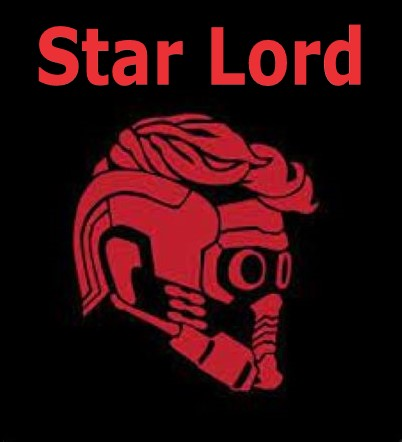
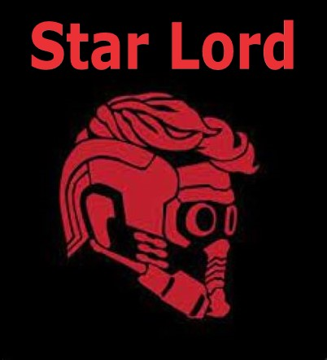
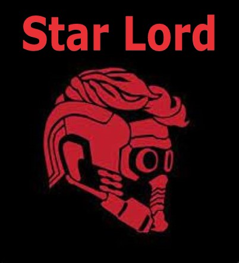
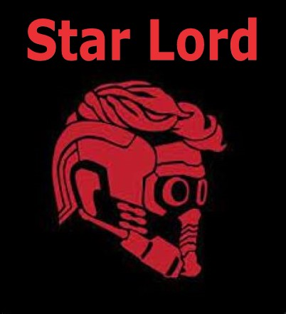

Peter Quill was born in 1980. His father was the Celestial Ego (a fact of which Quill does not become aware until later in life), while his mother, Meredith, was a human from Missouri. As a child in 1988, Quill watches as his mother is dying from cancer. Unable to deal with it, he runs away and is abducted by the extraterrestrial spaceship of a mercenary gang called the Ravagers, led by Yondu Udonta. Although Yondu has been hired to deliver Quill to Ego, being aware of Ego's monstrous intentions, he instead keeps the boy and raises him as a surrogate son.
26 years later, an adult Quill is a member of the Ravagers, and has had many adventures around the galaxy. While on a scavenging job, Quill finds himself embroiled in a significant power struggle and revenge war between two advanced galactic powers, the Kree warlord Ronan the Accuser and Xandar's Nova Corps, while also being hunted by Yondu after failing to bring him a stolen relic he found on Morag (later revealed to be an Infinity Stone). After he successfully retrieves the Power Stone, he returns to Xandar, where he is confronted by Gamora, who attempts to steal the Stone for herself, and Rocket and Groot, who attempt to capture Quill to collect a bounty on him. After a fight breaks out, the four are sent to a Nova Corps prison called the Kyln. They break out with another cellmate named Drax the Destroyer and escape on Quill's spaceship, where they become the Guardians of the Galaxy. Gamora takes them to Knowhere, where the Collector explains the significance of the Infinity Stones. However, they are attacked by Ronan's forces and forced to flee, losing the Power Stone in the process. Learning that Ronan plans to use the Power Stone to completely destroy Xandar, they travel there to stop him, with the help of Yondu and the Ravagers. After a battle between Ronan's army and the Nova Corps, the Guardians manage to destroy Ronan's warship. Quill initiates a dance-off to distract Ronan while the others blast Ronan's axe to free the Power Stone, which they are able to use to disintegrate Ronan. In the end, Quill and the Guardians are hailed as heroes as he vows to keep an eye on the team in case they break any laws again. Throughout the film, Quill is shown listening to a mixtape of various hit songs from 1962 – 1986 in a Walkman that was given to him by his mother, which serves as his only connection with Earth.